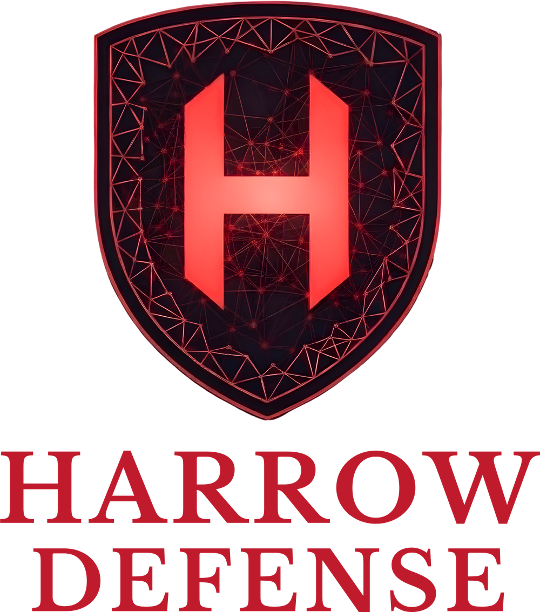

PYLON takes the sensors already on a soldier and puts their data onto the tactical network. A body-worn node designed to under 100 grams and under a watt: an individual position for every dismounted soldier, an infrastructure-free mesh, and native Cursor-on-Target output into ATAK. The radio is someone else's job.

Physiological monitors, weapon-status and ammunition counters, counter-UAS alerts, and CBRN detectors all speak Bluetooth. The tactical network speaks something else, and the two only meet at the leader carrying an end-user device. For everyone else, the data stays on the body and the commander stays blind.
Body-worn Bluetooth sensor output is trapped at the soldier with no secure path to the tactical network or to the cloud behind it.
Position reporting stops at the leader carrying an end-user device, roughly 90,000 systems. The remaining roughly 300,000 dismounted soldiers have no affordable path to an individual position on the network.
Raw sensor streams would overwhelm tactical links. Nothing at the edge compresses, prioritizes, and formats data before it reaches the network.
PYLON does not try to be the soldier's computer, radio, or display. It is the layer underneath them, which keeps it small, keeps it cheap, and makes it complementary to the systems the Army is already buying rather than competitive with them. Four steps, each deliberately boring so the whole chain is reliable.
PYLON pairs with the sensors already on the soldier over Bluetooth Low Energy and pulls their output continuously.
It moves that data soldier to soldier over a LoRa mesh in the 902-928 MHz band. Low data rate, long range, very low power, and hard to detect. No infrastructure and no vehicle required.
Onboard compute converts proprietary sensor output into Cursor-on-Target, the native wire format of the TAK ecosystem, so the data lands in ATAK without a gateway server or a custom integration.
Four modes, enforced in hardware rather than software, including a kill switch that physically opens the radio path for a true zero-RF state.
Most tactical networking treats radio silence as a software setting. On PYLON the full mode is a physical disconnection, so the soldier controls his own signature rather than trusting a configuration file. In an environment where the emitter you carry is what gets you found, that distinction is the product.
Project Polaris 2026, the Army's public ground maneuver modernization plan, calls for soldier wearables and intra-soldier wireless that give dismounted leaders a persistent digital link to voice, position, and fires without relying on a vehicle. Near term is FY26 to FY30.
The Army declared Next Generation Command and Control ready to scale after Project Convergence Capstone 6, with I Corps first to field. The transport PYLON rides is being installed, not proposed.
Soldier Borne Mission Command awards across three prime contractors since September 2025. Phase two puts 170 prototypes into test in early 2027, with a production downselect as soon as FY2028.
Three independent players in this lane have been acquired: Klas by Anduril, Kägwerks by Codan, goTenna by Forterra. The acquirers are buying.
No fielded device aggregates soldier-worn sensor data and bridges it to the tactical network at under 100 grams and under a watt. That slot closes when the Soldier Borne Mission Command primes lock their hardware.
Every operator who works where the cell tower, the satellite link, and the GPS fix cannot be assumed has the same three questions: where are my people, what condition are they in, and how do I keep them connected when the network fails. The first-responder market has already standardized on exactly PYLON's architecture, a body-worn hub that aggregates sensors and pushes location, telemetry, and status to an incident command dashboard, with federal equipment funding flowing through the FEMA Assistance to Firefighters Grant program at roughly $324M appropriated in FY2024.
None of the vendors serving that market publicly offers an infrastructure-independent operator-to-operator mesh, and none claims Cursor-on-Target output, even though DHS is a named TAK sponsor. PYLON was designed for both from the start. The same hardware, the same firmware, and the same open output format serve every environment below.
Dismounted-soldier gaps in individual position, sensor aggregation, and tactical-network bridging. Designed for contested electromagnetic environments and extended dismounted operations.
Army · Marine Corps · Special OperationsTactical teams operating in stairwells, tunnels, transit systems, and RF-degraded urban interiors where commercial radios and cellular service break down.
SWAT · Transit · CorrectionsHand-crew, hotshot, and search-and-rescue operations across remote terrain, beyond repeater coverage and cellular footprint, where crew location and physiological state matter.
Hand crews · Hotshots · SAR teamsMulti-agency personnel accountability and physiological monitoring at mass-casualty scenes, structure fires, and HAZMAT incidents where several radio systems intersect.
Fire · EMS · Incident commandUnderground personnel tracking, gas-sensor aggregation, and mesh relay in RF-denied workings. Lone-worker safety on pipelines, transmission corridors, and remote sites.
Underground · Pipelines · UtilitiesResearch teams, expedition crews, and professional outdoor operators working far from cellular and reliable satellite coverage.
Field science · Guides · OffshoreVirginia company based in Alexandria, founded to build body-worn systems for people who work beyond reliable infrastructure. Mesh and positioning demonstrated end to end on development hardware: a four-node self-healing LoRa mesh carrying GNSS position into CivTAK as Cursor-on-Target, with per-operator icons on the tactical map. U.S. patent applications filed on the core architecture. SBA certification as a service-disabled veteran-owned small business, and DLA Joint Certification Program certification for access to export-controlled technical data.
Custom board with an all-COTS bill of materials, designed with a U.S. electrical-engineering partner.
Twelve assembled Rev A prototypes delivered. First board powered up; radios and sensors pass initial self-test. Bring-up continuing toward squad-scale validation.

Former U.S. Army Special Forces officer and White House Fellow. Hardware program leadership at Apple. Defense and intelligence AI/ML deployments at DataRobot. Chief Operating Officer of a defense electronics company shipping soldier-borne systems at scale. West Point, MIT Sloan, Harvard Kennedy School, Johns Hopkins.
Harrow Defense has taken PYLON from concept to assembled Rev A hardware without outside capital or a government award. The intellectual property is founder-developed and company-owned, the cap table is clean, and the primary transition customer is the Army portfolio that owns Soldier Borne Mission Command. Deck, data sheet, and technical materials are available on request.
For the current deck, technical materials, and a conversation with the founder.
dan@harrowdefense.comCapability briefs, pilot programs, integration with soldier hubs and TAK products, and procurement across government and commercial markets. SDVOSB, SBIR-eligible, SAM.gov active, CAGE 1AQ41.
dan@harrowdefense.com